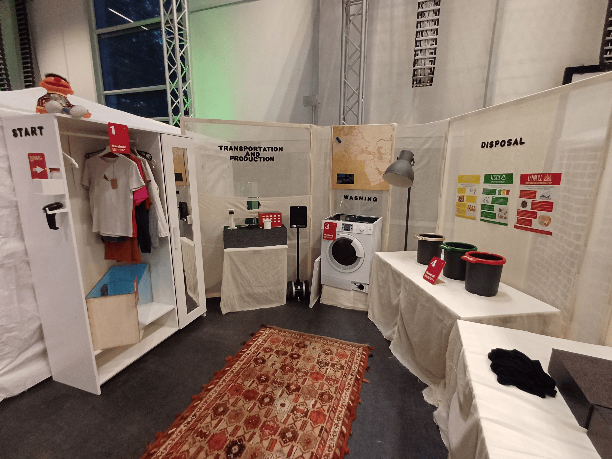
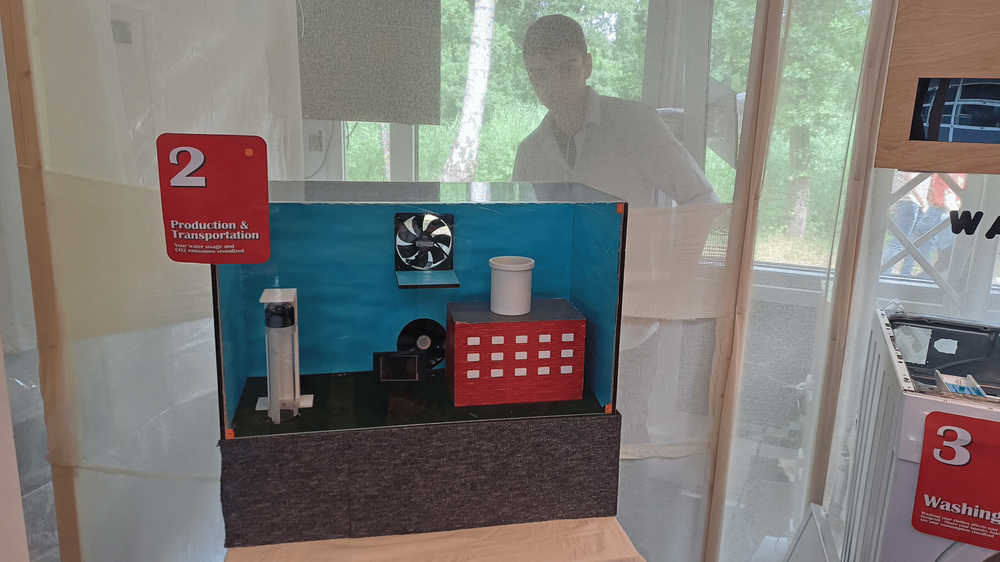
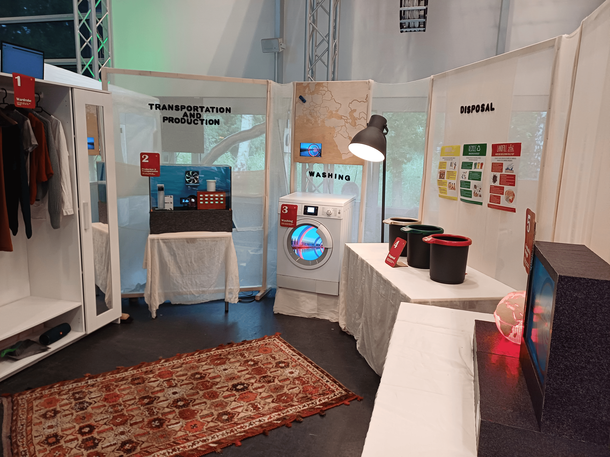
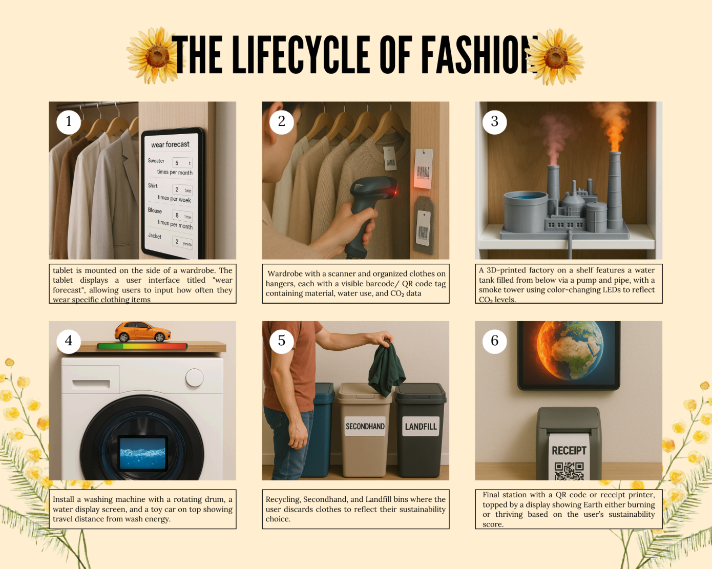

The Climate Toll of the Fashion Life Cycle
As part of a university team project, we designed and built a physical interactive installation exposing the environmental impact of the clothing lifecycle, from manufacturing through to disposal. Rather than presenting statistics on a screen, the installation lets a single user physically journey through each stage: selecting an outfit at a smart wardrobe, watching a miniature factory emit smoke and consume water to simulate production, rotating a washing machine drum to see cumulative water and energy use, and finally choosing how to dispose of their garment across recycling, secondhand, or landfill bins.
Every choice fed into a running sustainability score, visualised through a colour-changing LED Earth model at the end of the experience, glowing green for thoughtful decisions or burning red for careless ones. The system combined Arduino-driven hardware (barcode scanning, water pumps, smoke machines, rotating mechanisms) with a Python backend pulling from real datasets on textile production emissions, water consumption, and global textile waste, to ground the experience in real-world figures rather than abstract numbers.
The installation was designed with museums, sustainability fairs, and university spaces in mind, targeting the general public and especially students, to turn passive awareness of fashion's environmental cost into something felt and reflected on.



